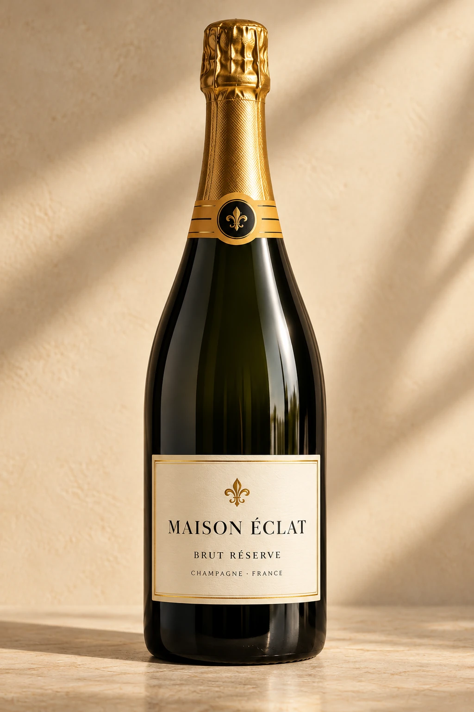
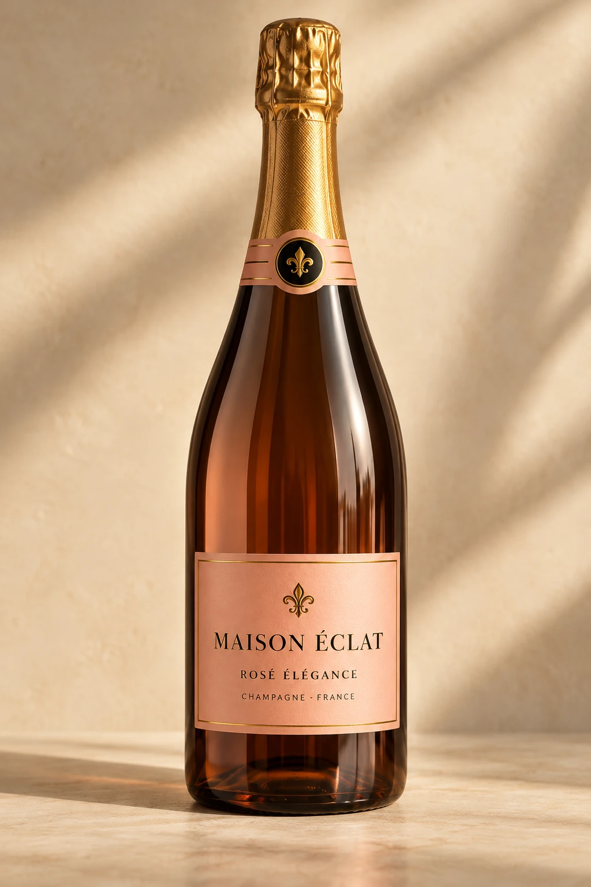
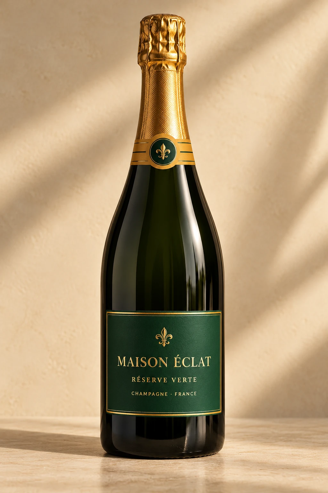
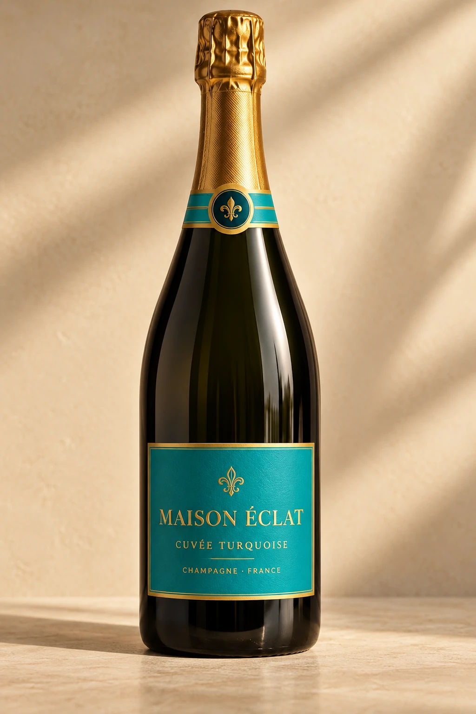

N° 01 SIGNATURE
SIGNATURE
SIGNATUREMAISON ÉCLAT
L'ART DE VIVRE · ÉDITION 2026
En hyllning till de gyllene ögonblicken. Utforska en champagnevärld där tidlös elegans möter nyfikenhet, smaker och firande.
01 — LA COLLECTION
Från gyllene klassiker till djärvare uttryck. Fem fiktiva cuvéer, formgivna för att förmedla en känsla av fransk lyx.
SIGNATUREMAISON ÉCLAT

MAISON ÉCLAT

MAISON ÉCLAT

MAISON ÉCLAT

MAISON ÉCLAT
02 — L'ESPRIT ÉCLAT
De finaste stunderna behöver inte vara planerade. De uppstår runt ett bord, i ett samtal och i ett glas som lyfter upplevelsen. Maison Éclat är ett designkoncept inspirerat av den franska champagnekulturen.
Utforska vår journal03 — LE JOURNAL
Inspiration och kunskap för dig som vill upptäcka mer om aromer, servering och champagne till maten.